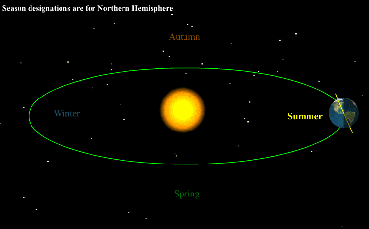
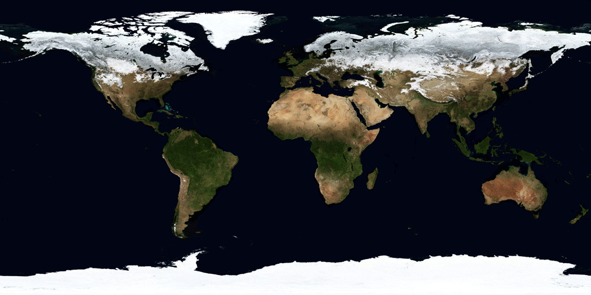

A season is a division of the year marked by changes in weather, ecology, and amount of daylight. Most areas of the Earth have four seasons in a year: spring, summer, autumn, and winter.
The seasons result from the Earth's axis of rotation around the Sun being tilted with respect to its orbital plane by an angle of approximately 23.4 degrees.(This tilt is also known as "obliquity of the ecliptic".)
Regardless of the time of year, the northern and southern hemispheres always experience opposite seasons. This is because during summer or winter, one part of the planet is more directly exposed to the rays of the Sun than the other, and this exposure alternates as the Earth revolves in its orbit.
